Battery Stack Flip Fixture
Pneumatic vacuum-assisted tooling designed to improve felt placement speed, repeatability, and automation readiness.
Overview
On the Battery Stack team at Invinity Energy Systems, one of my main projects was developing a fixture to improve felt placement during cell-stack assembly. Each stack contains 50 cells, and production can process roughly 200 cells per day, so a manual placement step repeated at every cell creates a meaningful amount of operator time and opportunity for variation.
The existing process required operators to position the felt manually before continuing assembly. My objective was to develop a fixture that could locate the felt consistently, hold it securely during a flipping motion, interface with the existing B-frame and TS2 equipment, reduce operator effort, and still leave a clear path toward future actuation.
I carried the project from early design requirements through Onshape CAD, DFM, mechanism selection, pneumatic gripping, 3D-printed validation, counterbalance design, prototype assembly, GD&T drawings, BOM development, and ECOS release .
Developing the Fixture Architecture
I began by designing around the existing production equipment rather than treating the fixture as a standalone mechanism. The plate had to fit around the B-frame, TS2 fixture geometry, hinge region, pneumatic components, operator access, and the limited space already occupied by assembly hardware.
I brought the existing geometry into Onshape and developed the fixture around those interfaces. As the concept evolved, I removed geometry that added machining complexity without improving function, adjusted features that could interfere with the B-frame, and looked for ways to make wear-prone features replaceable rather than embedding them permanently into the main plate.
Alignment became one of the most important parts of the design. Holding the felt securely would not help if the plate itself did not locate repeatably against the existing tooling. I therefore designed locating geometry around the B-frame: the frame nests into matching negative geometry on the plate, while additional locating features engage the existing slots to constrain its final position.
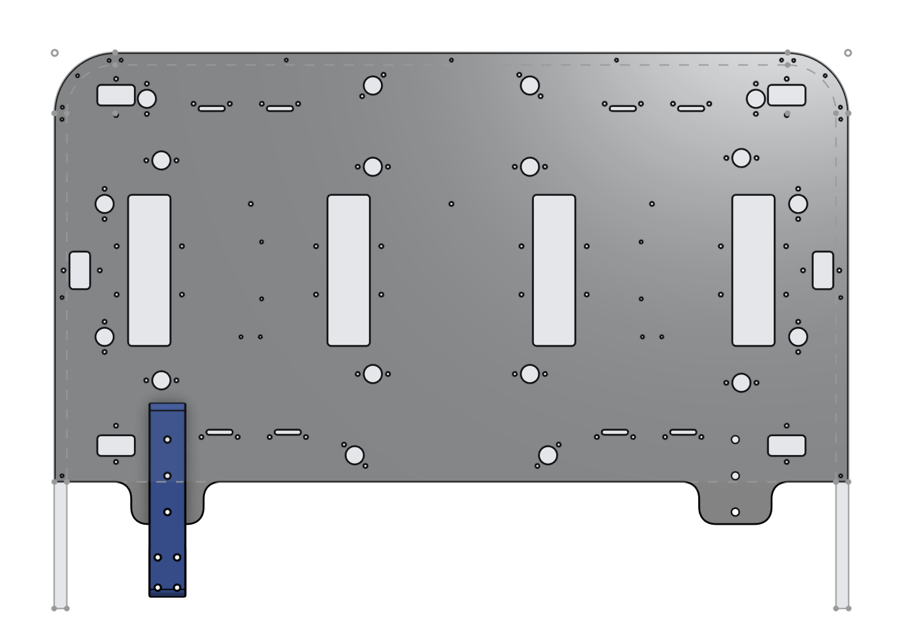
The flipping motion introduced another set of decisions. I first established the hinge axis relative to the B-frame and fixture plate, then evaluated different ways of supporting that rotation. Conventional hinges were compact, but I also needed to consider wear, side loading, replacement, counterbalance attachment, and the possibility of adding powered actuation later.
I evaluated butt hinges, piano hinges, and a shaft-based pivot supported by bearings. The shaft-and-bearing approach gave me more flexibility because the rotational axis could be supported independently while also providing a place to transmit torque to the counterbalance or a future motor. From there, I worked through shaft geometry, pillow-block bearing placement, flange couplers, mounting extrusions, and the interfaces between the shaft and flipping plate.
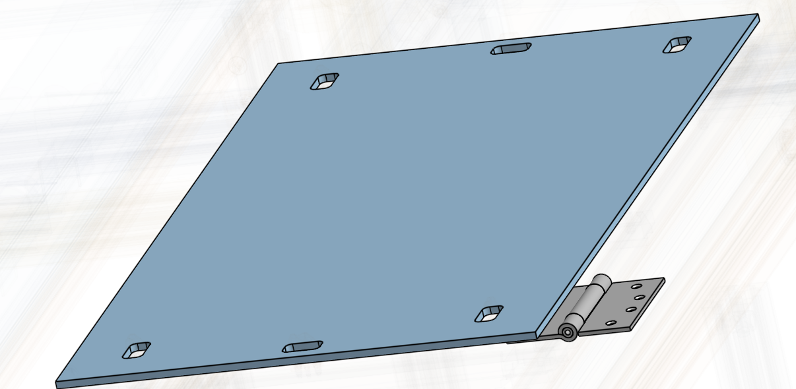
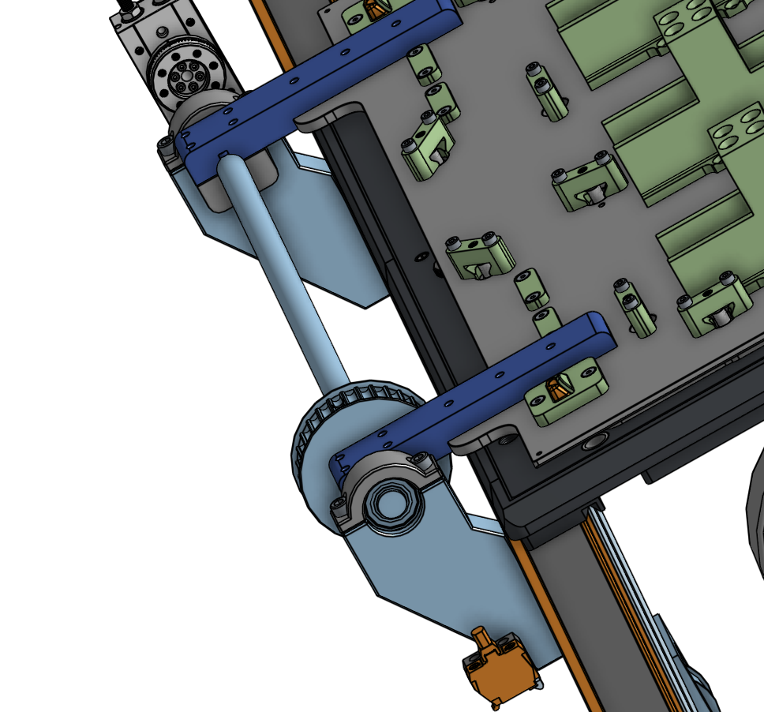
Once the motion of the fixture was defined, I focused on the part that directly handled the felt. Since the material is flexible and porous, I did not want the design to depend on a single suction point. I evaluated vacuum-cup size, quantity, available contact area, component availability, and how easily the layout could be adjusted during prototyping.
I combined the vacuum system with four needle grippers. The grippers engage approximately 3 mm into the 4.5 mm felt, giving enough mechanical retention to prevent the material from shifting while remaining within the felt thickness.
The vacuum cups, needle grippers, vacuum generators, tubing, and operator controls were designed as part of the fixture architecture rather than being added after the plate was finished. I also simplified the plate by mounting the gripping hardware directly wherever possible instead of creating unnecessary intermediate structures.
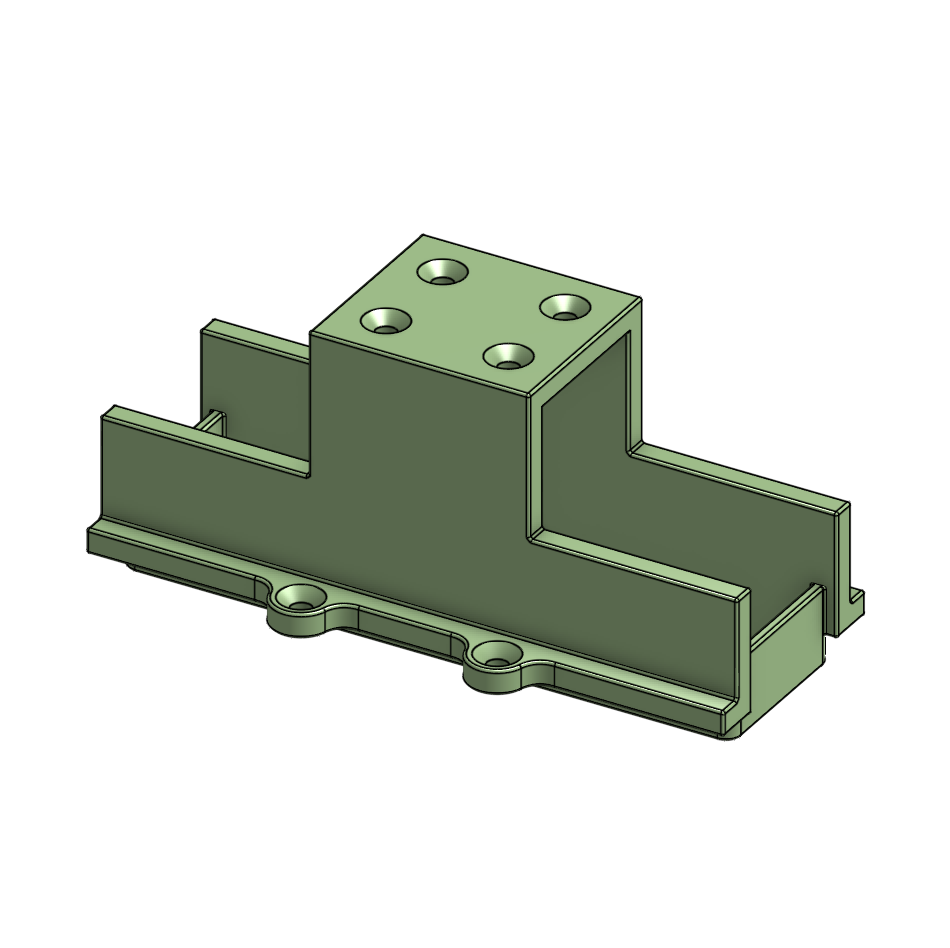
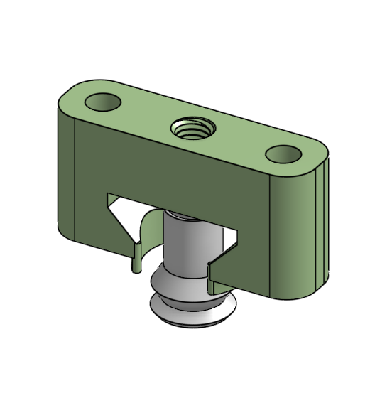
Prototyping the Design Before Release
I did not want the first physical validation to happen after a full metal plate had already been manufactured. Instead, I broke the fixture into smaller components that could be produced quickly through 3D printing.
I printed sections of the plate along with needle-gripper holders, vacuum-cup holders, pillow-block bearing extrusions, locating features, and other mounting components . These parts let me check the highest-risk interfaces directly against the existing equipment.
I used the printed parts to verify B-frame fit, slot engagement, component clearances, fastener access, pneumatic routing, and the physical position of the grippers and vacuum cups. Where the fit was too tight or an interface was difficult to assemble, I could return to the CAD and adjust it before committing to production hardware.
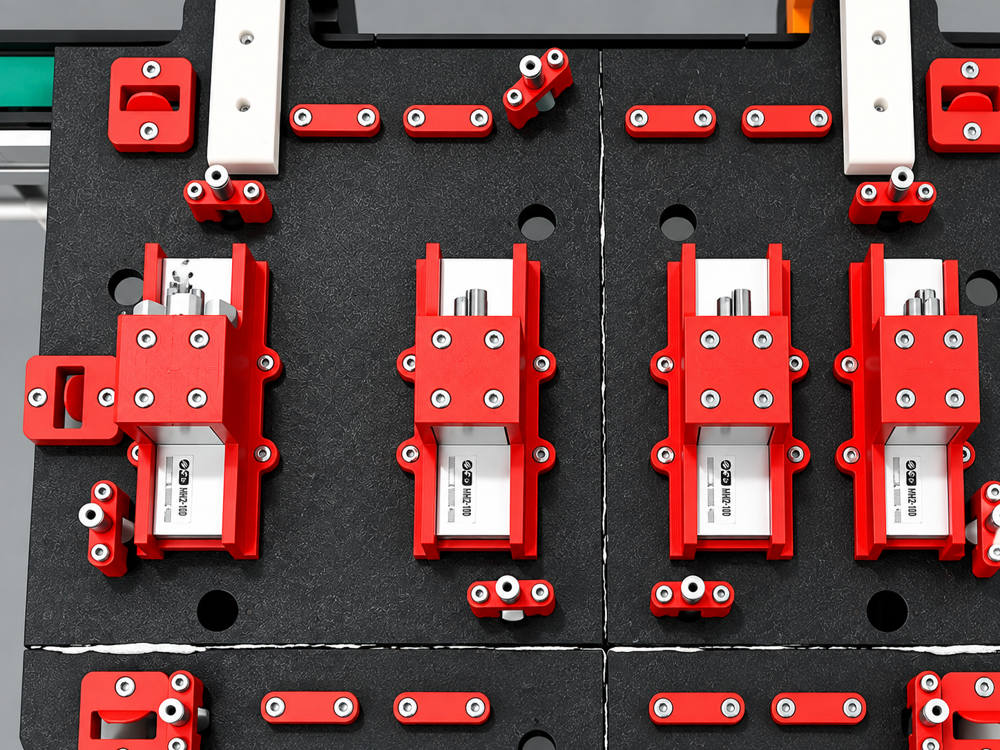
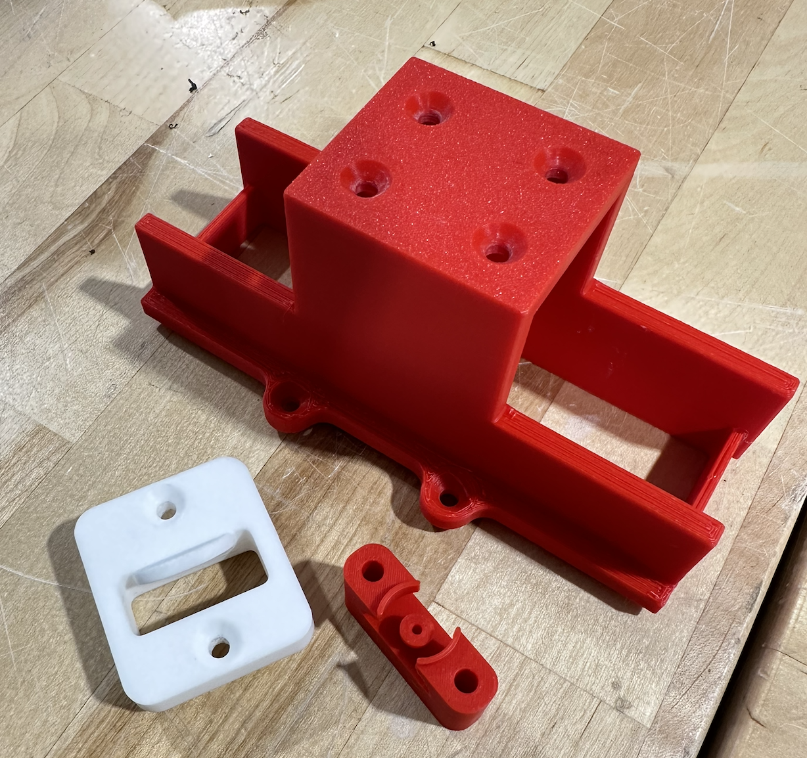
After the individual interfaces were validated, I assembled the fixture into a working prototype. The prototype combined the plate, vacuum generators, pneumatic tubing, vacuum cups, four needle grippers, locating features, bearings, and supporting hardware into one mechanism.
This was where the design moved from isolated CAD features into a complete production tool. I could check whether the felt stayed in place throughout the motion, whether the operator controls were straightforward to use, whether the plate located correctly against the B-frame, and whether the pneumatic system could be routed without interfering with the rest of the equipment.
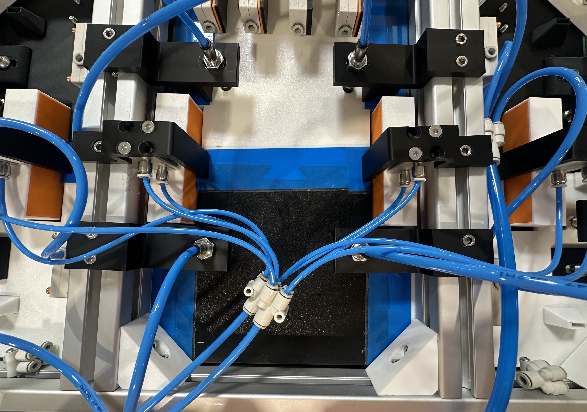
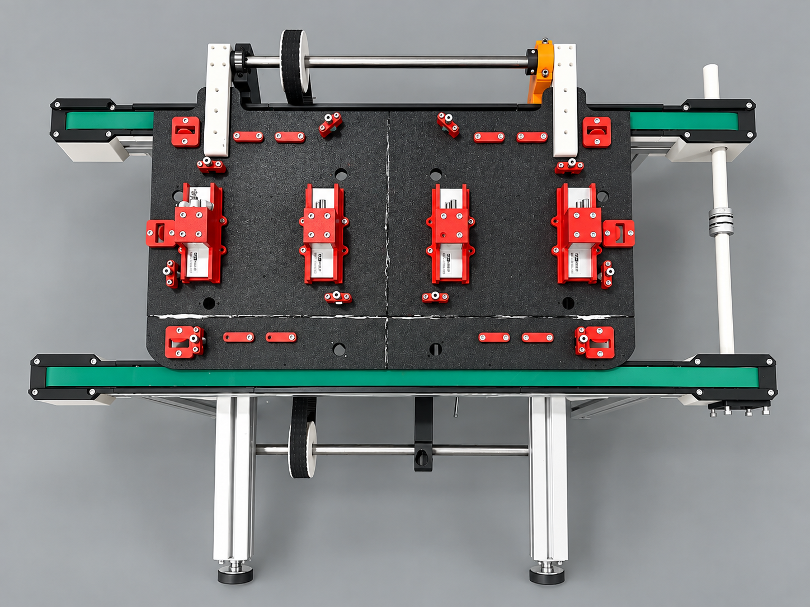
Reducing Operator Effort and Designing for Future Actuation
Once the plate existed physically, another problem became clear: the assembly was heavy enough that repeatedly flipping it would create unnecessary operator effort. The plate and cover were approximately 5.5 kg, so I developed a counterbalance rather than relying on the operator to carry the full load through every cycle.
I designed a pulley-and-counterweight system around the same rotational architecture used for the fixture. I located the plate center of gravity, determined the available counterweight arm, and balanced the moments around the pivot to estimate the required mass.
I then packaged the pulley, weights, shaft supports, and mounting structure around the existing equipment so the system would not interfere with production access.
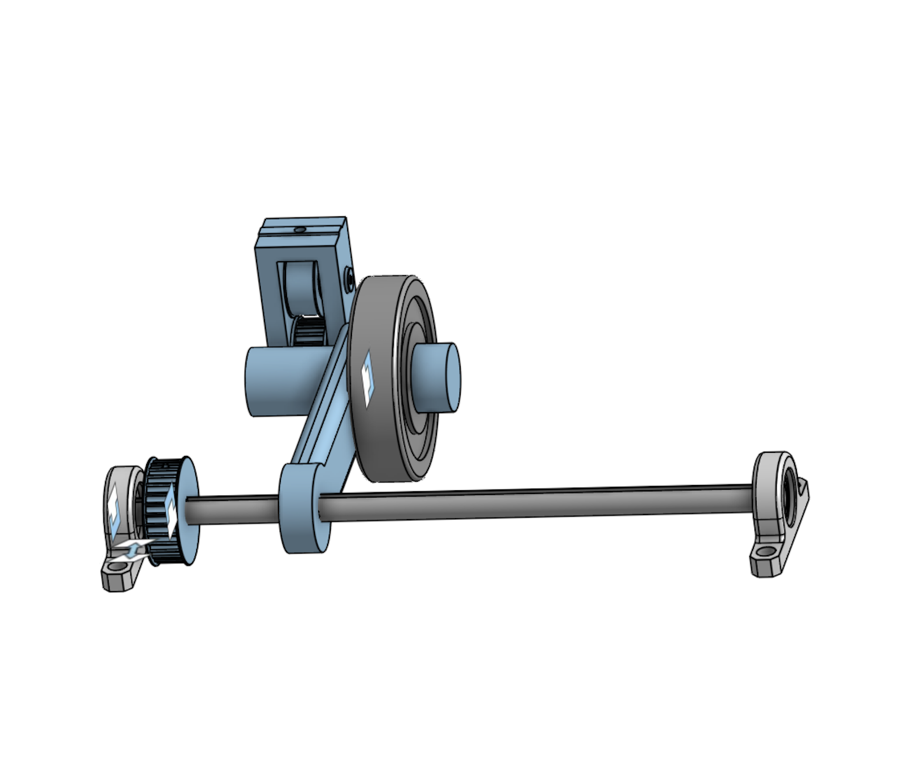
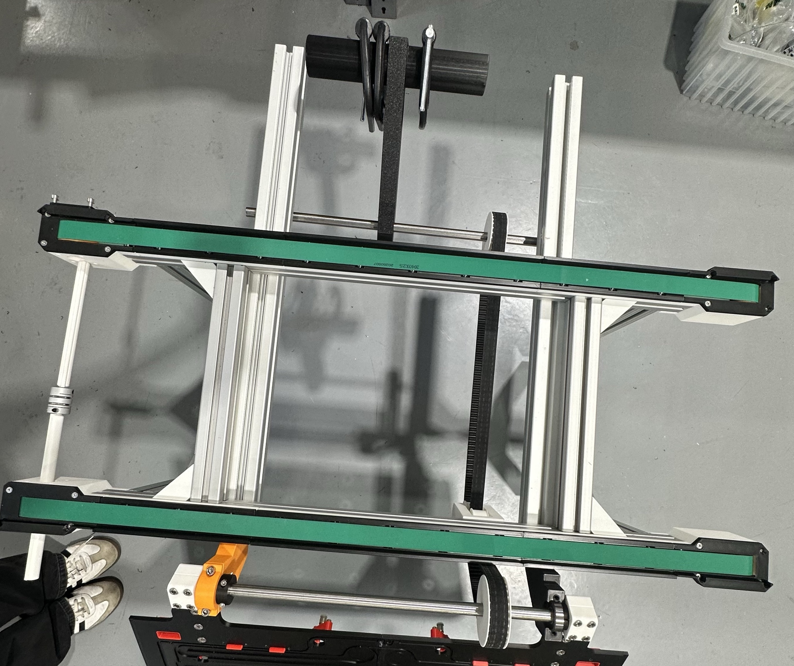
I also checked the shaft and support arrangement analytically instead of relying only on the CAD. I developed the free-body diagram, calculated bearing reactions, built the shear-force diagram, and evaluated deflection under the plate load.
The calculated maximum shaft deflection was approximately 0.3 mm, which supported the selected arrangement for the prototype. The counterbalance reduced the effective plate load from roughly 5 kg to below 1 kg, an approximately 80% reduction in the load the operator had to control.
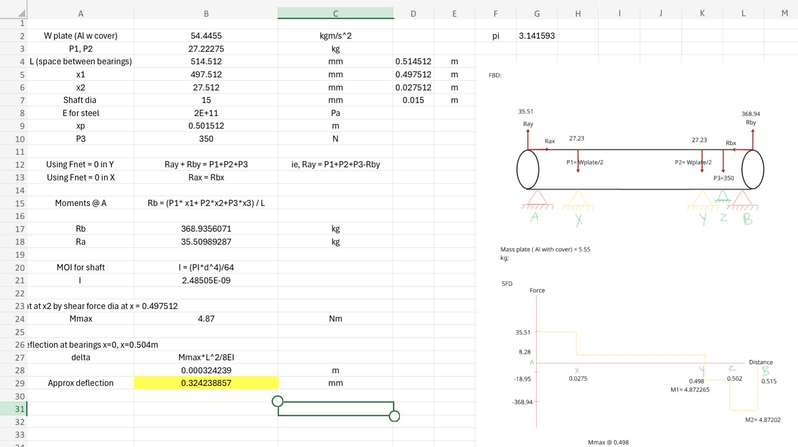
I deliberately kept the rotational architecture compatible with future actuation. Because the plate rotates about a defined shaft, a motor or actuator can later be connected to the same mechanism rather than requiring the fixture to be redesigned from the beginning.
After validating the mechanism, I finalized the design around manufacturability, assembly access, standard hardware, replaceable features, pneumatic routing, and the interfaces that required tight control. I produced manufacturing drawings using GD&T, developed the BOM, and released the documentation through ECOS change control.
The released geometry is proprietary, so the detailed production drawings are not shown in this portfolio. The manufacturing package defined the dimensions, tolerances, hardware, and assembly requirements needed to move the fixture beyond the prototype stage.
The cycle-time values are projected from reducing manual felt placement from approximately one minute per cell to several seconds with the fixture. They represent the production opportunity the design was targeting rather than a completed production-rate study.
Stack Creep Experiment
In parallel with the fixture project, I worked on a separate investigation into temperature-dependent creep of the battery stack. This required a different kind of engineering work: instead of developing a production mechanism, I needed to create a test setup that could maintain a controlled thermal environment while allowing repeated dimensional measurements over time.
I began with the enclosure and insulation strategy. I compared materials including XPS, polyisocyanurate, and mineral wool based on insulation performance, stiffness, durability, ease of fabrication, and handling around the test.
I developed the enclosure around foil-faced polyiso panels and designed it to remain open from the bottom so it could be lifted away from the stack for measurements. I also considered corner reinforcement, foil-tape sealing, heater packaging, temperature-controller placement, and ways to reduce heat loss around the lower edges of the enclosure.
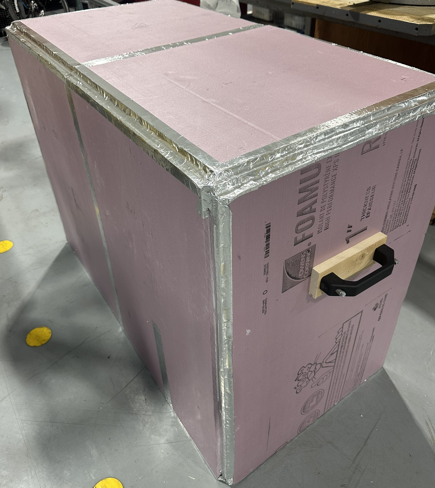
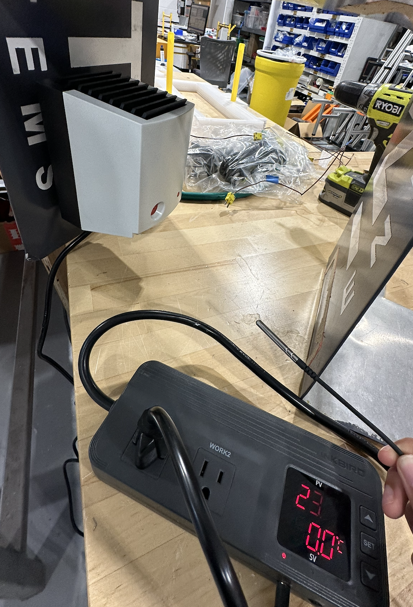
The experimental sequence started with the stack on a stable platform and an initial stack-height measurement before heating. I then placed the heater inside its metal enclosure, installed the insulation around the stack, and used a thermal regulator to bring the system to the desired test temperature.
I planned the experiment across multiple temperatures rather than treating creep as a single-condition measurement. For each run, the system had to reach a stable internal temperature before the dimensional data could be considered meaningful.
Opening the enclosure to take a measurement disturbed the thermal condition, so I treated that disturbance as part of the experiment rather than ignoring it. I tracked how frequently the enclosure was opened, how long it remained open, the temperature immediately after it was replaced, and how long the system took to recover.
I also planned multiple thermocouple locations throughout the enclosure to evaluate the internal temperature gradient. This was important because a single controller reading would not necessarily prove that the full stack was experiencing the same thermal condition.
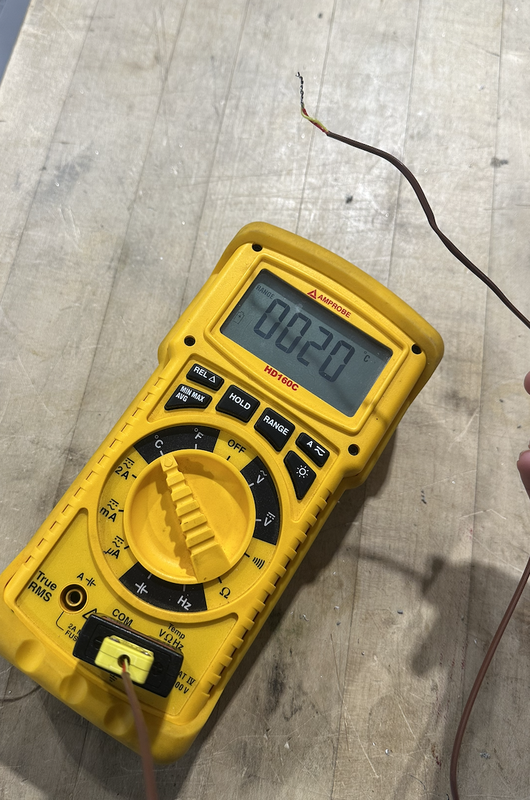
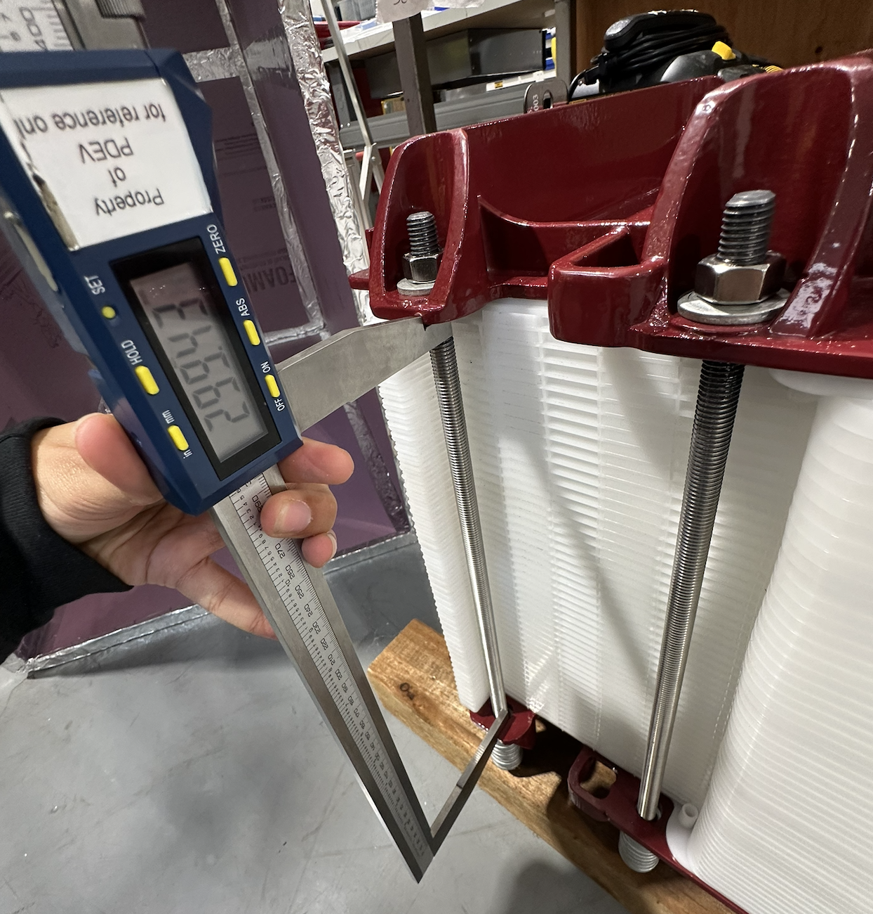
I organized the resulting height, time, and temperature data in Excel and used time-temperature superposition to characterize how the stack's creep response changes with both temperature and elapsed time.
The experiment therefore combined enclosure design, heating, instrumentation, measurement-system control, thermal validation, dimensional testing, and data analysis rather than functioning as a simple pass-or-fail test.
Outcome
The fixture project took an open production problem through the complete development cycle: I defined the mechanical constraints, designed around existing equipment, simplified the geometry for manufacturing, selected the pivot architecture, developed the pneumatic retention system, validated interfaces with 3D-printed parts, assembled a working prototype, reduced the operator load with a counterbalance, and released controlled manufacturing documentation.
The creep investigation followed the same engineering mindset in a different form: define the question, build a controlled experiment, understand the sources of measurement variation, collect repeatable data, and use that data to characterize the physical behaviour of the stack.
Across both projects, my workflow was: define → design → calculate → prototype → test → iterate → document → release .